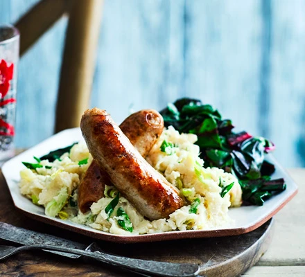

Bangers and Mash

Description
British Dish made with Sauasges and Mashed Potatoes.
Ingredients
- 3 Sausages
- 400g Maris Piper Poatoes
- Gravy Granules
Steps
- Cook Sausages in the grill or airfryer
- Boil potaotoes
- Mash poatoes with butter and a splash of milk